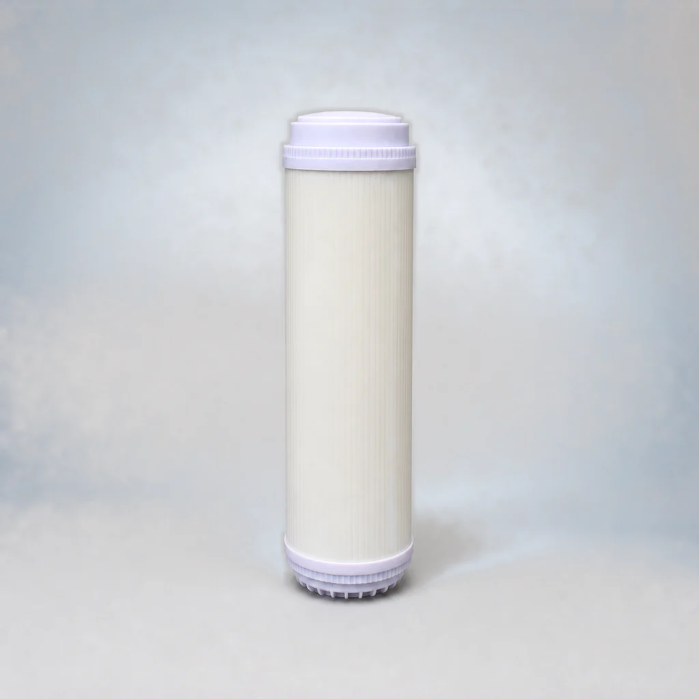

Flat-End CTO Carbon Block Filter Cartridge
- Format
- Flat-end cartridge
- Filter media
- Carbon block (CTO)
Compare the product family, connection format and reviewed project requirements before requesting a quotation.
Compare the listed models and open a detail page. Model records are counted separately from configurable dimensions; suitability must be confirmed for your project.



The Flat-End PP Sediment Filter Cartridge is a prefiltration cartridge for household water purification equipment. It provides coarse filtration of raw water and is described as filtering sediment, impurities, rust and suspended matter.
The Flat-End UDF Coconut-Shell Granular Activated Carbon Filter Cartridge uses granular activated carbon described as adsorbing and reducing color, odor, residual chlorine, halogenated hydrogen compounds and organic matter in water.
The Flat-End CTO Coconut-Shell Carbon Block Filter Cartridge is described as intercepting organic matter, particles and other impurities while adsorbing and reducing color, odor, residual chlorine and other radioactive substances. It is also described as it inhibits microbial reproduction, purifies water and improves taste.
The Flat-End T33 Coconut-Shell Activated Carbon Filter Cartridge contains acid-washed coconut-shell activated carbon with a stated iodine value above 1100. Product information describes strong adsorption, reduction of color, odor and residual chlorine, increased oxygen content, inhibition of microbial growth and improved water taste.
The Flat-End PCO High-Iodine Sintered Activated Carbon Filter Cartridge is made from imported 80–200 mesh, high-iodine, acid-washed coconut-shell activated carbon processed by a special sintering method. It is described as it adsorbs residual chlorine, color, odor and other harmful substances, intercepts organic matter and particles, inhibits microbial reproduction, purifies water and improves taste.
The Flat-End UDF Coconut-Shell Granular Activated Carbon Filter Cartridge uses granular activated carbon described as adsorbing and reducing color, odor, residual chlorine, halogenated hydrogen compounds and organic matter in water.
The Flat-End CTO Carbon Block Filter Cartridge is described as intercepting organic matter, particles and other impurities while adsorbing and reducing color, odor, residual chlorine and other radioactive substances. It is also described as it inhibits microbial reproduction, purifies water and improves taste.
The Flat-End T33 Coconut-Shell Activated Carbon Filter Cartridge contains acid-washed coconut-shell activated carbon with a stated iodine value above 1100. Product information describes strong adsorption, reduction of color, odor and residual chlorine, increased oxygen content, inhibition of microbial growth and improved water taste.
The Flat-End PCO High-Iodine Sintered Activated Carbon Filter Cartridge is made from imported 80–200 mesh, high-iodine, acid-washed coconut-shell activated carbon processed by a special sintering method. It is described as it adsorbs residual chlorine, color, odor and other harmful substances, intercepts organic matter and particles, inhibits microbial reproduction, purifies water and improves taste.
The Flat-End UF Membrane Filter Cartridge uses hollow-fibre ultrafiltration membrane technology with a stated filtration precision of 0.01 micrometres. It is described as it reduces macromolecular ultrafine particles, pyrogens, viruses and bacteria, including a stated bacteria-removal rate of 99.9%, and reduces water turbidity. The stated rated purified-water flow is 3.9 L/min at an applicable water pressure of 0.1–0.4 MPa.